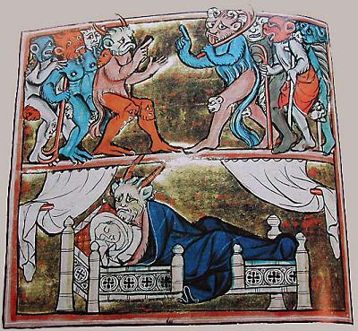
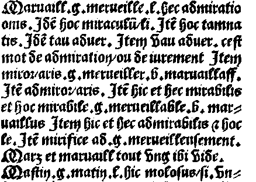

I
Merlin au berceau
Merlin in his cradle
Dialecte de Cornouaille
|
Deuxième publication dans le Barzhaz, édition de 1867 . Il en est de même des deux morceaux communiqués par Mme de Saint-Prix dont il est dit: "J'ai été mis sur la trace du poème de Merlin par Mme de Saint-Prix, qui a bien voulu m'en communiquer des fragments chantés dans le pays de Tréguier." C'est sans doute ce chant qu'évoque la lettre d' Emile Ernault à Gaidoz, datée du 2 novembre 1879: Lors d'une visite à Keransquer, La Villemarqué lui avait montré ses cahiers d'enquête, lui avait " chanté le commencement de Merlin, en [lui] disant qu'il lui semblait encore voir et entendre la nourrice de qui il le tient..." Selon Luzel et Joseph Loth, cités (P. 389 de son "La Villemarqué") par Francis Gourvil qui se range à leur avis, ce chant mythologique ferait partie de la catégorie des chants inventés . Dirag ho relégoù sakret, Santéz Anna, Rouanéz or bro Chetu ni hoah ur wézh tolpet, tolpet eid lared kénavo... Devant tes saintes reliques, Sainte Anne, reine de notre pays, Nous voici à nouveau réunis Réunis pour te dire « au revoir »... |
 |
The lullaby was then included in the 1867 edition of the "Barzhaz Breizh". So do the two fragments contributed by Mme de Saint-Prix, referred to in the sentence: "I was put on the scent of the Merlin poem by Mme de Saint-Prix who was so friendly as to send me fragments of it that are sung in the Tréguier area". It is very likely to this song that the letter sent by Emile Ernault to Gaidoz, on 2nd November 1879 refers: On the occasion of a visit he made to Keransquer manor, La Villemarqué had shown him his record copybooks, "and sung the first verses of Merlin, saying that he could see in mind's eye and hear again the wet nurse who sang it first to him." According to Luzel and Joseph Loth, quoted by Francis Gourvil (p. 389 of his "La Villemarqué"), this mythological song was " invented " by its alleged collector. Dirag ho relégoù sakret, Santéz Anna, Rouanéz or bro Chetu ni hoah ur wézh tolpet, tolpet eid lared kénavo... Before your holy relics, Saint Anne, queen of our country, Here we are together again Gathered to say “goodbye”... |
Ton
(Premier mode du plain-chant)
| Français | English |
|---|---|
|
1. Voilà treize mois et demi (bis)
que sous ce bois je m'endormis. refrain Dors maintenant, bien vite, bien vite; Dors maintenant, mon petit enfant. 2. J'avais ouï chanter un oiseau (bis) au chant si doux, au chant si beau. refrain 3. Au chant si doux, au chant si beau, (bis) comme le gazouillis de l'eau. 4. Si bien que, sans même y penser, (bis) je le suivis l'esprit charmé. 5. Je le suivis bien loin, bien loin; (bis) moi, la jeune et sotte nonnain! 6. - Fille de roi, son chant disait, (bis) aussi belle que la rosée, 7. Le jour levant en te voyant (bis) est rempli de ravissement! 8. Le soleil lui-même est ravi. (bis) Dis-moi qui sera ton mari?- 9. - Mais taisez-vous, oiseau maudit; (bis) tout votre babil m'étourdit! 10. Puisque le Roi du Ciel m'honore, (bis) je me moque bien de l'aurore. 11. De tous les regards du soleil (bis) ou de l'univers, tout pareil! 12. Je ne connais qu'un seul époux, (bis) c'est le Roi du ciel, voyez-vous. 13. Mais si doucement, il chantait: (bis) tête baissée, je le suivais. 14 Et voilà que je m'endormis (bis) de fatigue dans un taillis. 15. En dormant, j'eus une vision (bis) qui me fit perdre la raison. 16. J'étais dans l'antre d'un duzig (1) (bis) dans le cercle des eaux d'un puits. 17. Et ses pierres étaient d'opale, (bis) et comme le cristal, diaphanes! 18. Sur le sol un tapis épais (bis), de mousse et de fleurs par milliers. 19. Le duzig n'était pas chez lui, (bis) j'étais sans frayeur et ravie. 20. Lorsque, volant à tire d'aile, (bis) j'aperçus une tourterelle. 21. Elle vint frapper de son bec (bis) le mur transparent du duzig 22. Et moi, par pitié, pauvre sotte (bis) je m'en fus entrouvrir la porte. 23. Et elle entra dans la maison (bis) et vola le long des cloisons. 24. Elle effleurait tantôt ma main, (bis) et tantôt ma tête, ou mon sein; 25. Mon oreille happa trois fois (bis) et s'en retourna vers le bois. 26. Elle était joyeuse, moi pas! (bis) Maudits soient ce songe et ce bois! 27. Car mes larmes coulent à flots (bis) quand je balance ce berceau. 28. Qu'ils soient voués à l'enfer glacé (2) (bis) ces esprits noirs, ces farfadets! 29. Si ce rêve pouvait passer! (bis) Si je pouvais me réveiller!- 30. L'enfant, bien que tout nouveau-né, (bis) en souriant a répété: 31. - O ma mère, ne pleurez pas, (bis) je ne vous cause aucun tracas! 32. Mais vous faites mon désespoir (bis) en nommant mon père "esprit noir". 33. Car entre le ciel et la terre, (bis) comme la lune luit mon père 34. Mon père aime les malheureux, (bis) qu'il aide toujours, de son mieux. 35. Que Dieu le préserve à jamais (bis), Du puits de cet enfer glacé! 36. Le jour soit à jamais béni (bis), Où, pour bien faire, je naquis, 37. Pour le seul bien de mon pays (bis) Que Dieu garde de tous soucis. 38. La mère, abasourdie, reprit: (bis) "Quel est ce PRODIGE (3) inouï?" Dors maintenant, bien vite, bien vite Dors maintenant, mon petit enfant! (Trad. Ch.Souchon (c) 2003) |
1. "Thirteen months ago and three weeks (twice)
Beneath that wood I fell asleep. Chorus O sleep at last, my baby, my baby, O sleep at last, sweet baby, sleep fast! 2. I heard a bird's melodious tweet It sang so soft, it sang so sweet! Chorus 3. It sang so sweet, and so tender, Even more than babbling water. 4. So I followed him nearly blind, I was charmed by him in my mind. 5. Following him, far, far I went, Alas for me, my youth is spent! 6. - King's daughter, it cried as it flew, You are as fair as morning dew! 7. The morning light is all aglow When it shines on you, don't you know? 8. The rising sun, too, is spellbound; But, say, who shall be your husband? - 9. - Now be silent, ugly birdie! Your chattering makes me dizzy! 10. To the King of Heaven I'm bride, I don't care for the morning light! 11. I don't care either for the sun; Will by no one be looked upon! 12. If you will tell me of wedding, Be it with the Heavenly King! - 13. But its sweet chant went on and on; I followed him with my head down. 14. Till, exhausted, I had to stay And fell asleep, out of the way. 15. And there, it befell that I dreamed Of disconcerting things, it seemed: 16. I was in the house of a sprite (1) Amidst a waterfall so bright. 17. Its stones were bright, its stones shone clear, Its stones were like some crystal sheer. 18. A coat of moss covered the ground, With scattered spring flowers all around. 19. And as the sprite was just away, I felt fearless, happy and gay. 20. I saw approach, high in the sky, A white turtledove in full flight! 21. And that bird knocked with its small beak At the crystal wall of the freak. 22. I was stupidly pitying, Ran to the door and let it in. 23. Once inside, it fluttered about To and fro within the whole house, 24. Now on my shoulder, now on my head And now on my bosom it fled. 25. Three times it pecked at my ear And off it flew to the wood near. 26. The bird was merry, I am not, A curse on that day and that spot! 27. My poor eyes are now full of tears And the cause is this cradle here! 28. Could I send to a hell of ice (2) All the dreadful breed of the sprites! 29. I wish I could wake of that dream, And no one would know of my pain!" 30. Her son, although a newborn child, Retorted laughing to her cries: 31. "Be quiet, mother, and stop crying; I shall cause you no suffering. 32. It's a heartbreak I can't suffer That curse you call on my father! 33. For between the earth and the stars My dear father shines near and far. 34. My father loves everybody, When he can, he helps the needy. 35. And may God save him from your spell, From the abyss of icy hell! 36. But I do bless the happy morn When just to do good I was born. 37. Born for the good of my country That God may protect from worry!" 38. Astounded stood his mother there: "Such WONDER (3) is beyond compare!" O sleep at last, my baby, my baby, O sleep at last, sweet baby, sleep fast! (Transl. Lois Wickstrom & Ch.Souchon (c) 2003) |
|
1. "Duzig" signifie "esprit noir" ("du"= "noir").
(retour)
2. Une conception de l'enfer, peut-être héritée des anciens Celtes (cf. L'enfer ) (retour) 3. (PRODIGE = "Marzh", MERLIN = "Marzhin"). Cette berceuse, qui rappelle un peu le film "Rosemary's baby", raconte la façon mystérieuse dont fut engendré Merlin. Selon Geoffroy de Monmouth (Histoire des Rois de Bretagne), Merlin était le fils d'une nonne et d'un démon. (retour) |
1. "Duzig" means "black (="du") spirit" (not to be mistaken for "white spirit"!)
(back)
2. An unorthodox conception of Hell, possibly inherited from the ancient Celts(see The Song of Hell ) (back) 3. (WONDER = "Marzh", MERLIN = "Marzhin"). This lullaby, that could be styled "Close Encounter of the Bird Kind", tells of Merlin's mysterious begetting. According to Geoffrey of Monmouth's History of the Kings of Britain, Merlin was son of a nun and a demon. (back) |
Cliquer ici pour lire les textes bretons.
For Breton texts, click here.

|
Contexte littéraire
Une traduction française intitulée "Roman de Brut" (=Brutus, l'ancêtre éponyme des Britons) par le Normand Robert Wace (c. 1150) introduit la fameuse "Table ronde". Ainsi cette "Histoire" marque-t-elle l'apparition d'une fiction, la matière de Bretagne qui s'organise autour de quelques figures mythiques dont les deux personnages clés sont Arthur et Merlin. Ce dernier est, dans l'"Histoire", l'enfant sans père, le devin, le prophète et le magicien. Il sert Ambrosius Aurelianus , le défenseur de la Grande Bretagne contre l'envahisseur saxon au 5ème siècle de l'historien Nennius (9ème s.) avant de revêtir les traits d'un personnage de la tradition galloise Myrddin dont l'existence est attestée à une date bien plus ancienne. Dans la plupart de ces poèmes le prophète Myrddin est un prince devenu homme sauvage (Myrddin Wyllt) qui vit dans la "Forêt de Calédonie" (Coed Celyddon) où il s'est réfugié après avoir perdu la raison à la bataille d'Arfderydd (Arthuret près de Carlisle, 573). Cette "Vie" fait suite à deux fragments, intitulés "Vita Merlini silvestris" (1155), qui relatent la "Rencontre de Kentigern avec Lailoken" et l'histoire de "Lailoken à la cour de Meldred". Le nom "Lailoken" figure dans le poème "Cyfoesi", dans la phrase "I'm llallogan Fyrddin" (mon jumeau Myrddin) prononcée par la soeur de Merlin, phrase dans laquelle "llallogan" est un hypocoristique de "llallawg" (frère). Certains spécialistes suggèrent que la légende de Lailoken a été importée en Dyfed (Galles du nord) en renfort d'une étymologie populaire du toponyme Carmarthen (Caerfyrddin) (du latin "moridunum", fort de mer), faisant de Myrddin un compagnon de figures éponymes imaginaires telles que la Vieille Ahes et la Princesse Galiana . (Curieusement, le nom de Merlin n'apparaît qu'une seule fois sous la plume de Chrétien de Troyes (1130-ca. 1185) en dépit de l'étendue de son oeuvre: C'est dans "Erec et Enide" où il est question d'"esterlins blancs" qui avaient cours depuis le temps de Merlin. C'est aussi la première fois que cette monnaie, le "Sterling", est mentionnée). A ces trois Merlin (Myrddin, Lailoken, Suibne), le Barzhaz en ajoute un quatrième, auquel il donne dans les dernières éditions le nom de Marzhin , uniquement dans la version bretonne de ses textes. Ce changement de nom en 1845 (dans les 2 parties publiées en 1839, il s'agissait de "Merlin") a pu viser à rapprocher le texte breton du gallois "Myrddin". Il pouvait aussi être motivé par la présence de ce nom dans certaines versions de Basse-Cornouaille des Vêpres des grenouilles , article 3: Sous la forme explicite "Varzin" (Version Brizeux -Bzg et Scaër 2-Sk2), ou sous une forme composée "gentifarinn", "gentefarzinn", "zatefarin", "zadefarin", peut-être équivalente à "kentel Varzhin", "leçon de Marzin" (versions de Scaër et de St-Urien - Sk2, Sk3, StU1 et StU2). Héros insulaire et continental Les Bretons qui sous la pression des envahisseurs saxons vinrent s'implanter aux 5ème et 6ème siècles en Armorique ont maintenu des liens religieux et culturels étroits avec les chrétientés celtiques de Grande Bretagne. Les vieilles traditions littéraires et les antiques contes ont évolué de façon parallèle, en particulier la figure légendaire du roi Arthur qui concrétisait l'espoir des peuples bretons des deux cotés de la mer et celle de Marzhin-Myrddin, l'enchanteur solitaire des bois, qui devait être le Merlin de la littérature médiévale française. Nombre de seigneurs bretons d'Armorique accompagnèrent Guillaume le Conquérant et reçurent des fiefs en Angleterre. Les bardes, les poètes et les généalogistes qui leur étaient attachés reconnurent dans les récits gallois des traditions communes qu'ils popularisèrent en les adaptant au goût français. Plusieurs contes et chants bretons localisés en Armorique attestaient de l'extension dans ce pays des traditions arthuriennes. Pierre Jakez Helias cite l'un de ces chants, qui évoque la capture de Merlin, dans sa préface au recueil "Récits et poèmes celtiques" paru chez Stock Plus Moyen Age en 1981: Paket eo Merlig, me gav din. Chantons maintenant, drin drelin, Il est pris Merlin, je crois bien. Est-ce le conte, proche de la légende de Viviane, que rapporte le paysan Jean Le Ny de "Plounevez-du-Faou" (Châteauneuf) à Luzel , l'adversaire déclaré de La Villemarqué (il affirmait n'avoir jamais entendu le nom de "Merlin" dans ses enquêtes trégorroises), qui en fait état dans son "Deuxième rapport sur une mission en Basse-Bretagne" de 1870, pp. 134-135? "Merlinn" est capturé par une jeune femme déguisée en homme et conduit au roi enfermé dans un lit de fer à ressorts tiré par 4 chevaux. Le conteur était d'avis qu'il s'agissait d'un animal . A Collorec ce nom devient "Merlig". Dans la même histoire racontée en Trégor, l'animal capturé par une jeune fille s'appelle "Erlinn". Dans une autre version, il s'appelle la "Santirine" et c'est un poulain qui a un don de clairvoyance qui l'apparente à Lailoken et au Merlin de l'histoire de Grisandole de la Vulgate. Ce Merlin breton apparaît également dans les 4 pièces du Barzhaz réunies par La Villemarqué en un Cycle: Merlin au berceau - Marzhin en e gavell (1867) Merlin devin - Marzhin divinour (1839) Merlin barde - Marzhin barzh (1839) La conversion de Merlin - Distro Marzhin (1867) Le fils de la nonne Les diverses traditions littéraires s'accordent pour faire de Merlin le fils d'une vierge. Geoffroy outre cette identification d'Ambroise avec le fondateur éponyme de Carmarthen, fait intervenir ce dernier dans la conception d'Arthur et dans l'édification surnaturelle des mégalithes de Stonehenge. Il lui fait proférer en outre de longues "Prophetiae Merlini", qu'on attribuait peut-être à la figure éponyme de Carmarthen. Le sage Maugantius explique au roi qu'il a lu dans les livres des philosophes que beaucoup d'hommes ont été conçus de la sorte: "Ainsi que l'expose Apulée dans son "De Deo Socratis", des esprits que nous appelons 'démons incubes' habitent entre le ciel et la terre; ils participent à la fois de la nature des hommes et de celles des anges et lorsqu'ils le souhaitent, ils prennent figure humaine et s'unissent avec des femmes. Peut-être est-ce l'un d'eux qui a engendré ce jeune garçon." L'auteur, quel qu'il soit, de "Merlin au berceau", n'a pas commis cette erreur d'appréciation. Prolongement de l'oeuvre de Robert De Boron Dans la trilogie de la légende du Graal de De Boron ("Estoire dou Grail", "Merlin", "Perceval") racontée dans son poème de 504 vers et dans la version en prose qui est présente dans plusieurs ms, Merlin devient le mentor du jeune roi Arthur. Une inspiration divine le conduit à encourager l'obéissance à la volonté de Dieu en instaurant la quête du saint Graal, le calice de la Cène. Aux trois exploits surnaturels ci-dessus (forteresse de Vortigern, conception d'Arthur, édification de Stonehenge) vient s'ajouter un quatrième: l'épée que Merlin a figée par magie dans une enclume. Merlin avertit Arthur de sa mort tragique, avant de retourner finir ses jours dans la forêt voisine. Au début du 13ème siècle, deux textes "Suite de Merlin" et "Estoire de Merlin" introduisent une fin différente: la jeune Viviane dont le vieux sorcier s'est amouraché l'emprisonne dans un tombeau enchanté en usant de sa propre magie. Cette "Estoire" et quatre autres volumes, "Estoire du Saint Graal", "Queste du Saint Graal", "Estoire de Lancelot" et "La Mort Artus", composent le "cycle de la Vulgate" où Merlin continue d'attirer l'attention, avant d'être réduit au rôle de simple conseiller, dépourvu de tout pouvoir magique ou prophétique, dans la traduction anglaise de la Vulgate, "La Morte d'Artur", rédigée en 1485 par Thomas Malory. Un autre Fils de la Vierge Ce fils d'une vierge qui, alors qu'il n'est encore qu'au berceau, prend la parole pour justifier ses origines, a un auguste prédécesseur: Jésus, dans l' évangile arabe de l'enfance (6ème siècle). Cet évangile apocryphe, fort méconnu de nos jours en Occident, affirme que Jésus parla, étant au berceau, et qu'il dit à sa mère : "Je suis Jésus, le fils de Dieu, le Verbe, que vous avez enfanté, comme vous l'avait annoncé l'ange Gabriel, et mon Père m'a envoyé pour sauver le monde." Ce passage, présenté comme une citation de (Flavius) Josèphe (37-100), est repris dans le Coran qui met cette profession de la foi musulmane dans la bouche de Jésus bébé (sourate 19, 31-34): "Je suis le serviteur de Dieu, Il m'a donné le livre et m'a constitué prophète. Il a voulu que je sois béni partout où je me trouve, Il m'a recommandé de faire la prière et l'aumône tant que je vivrais, d'être pieux envers ma mère, Il ne permettra pas que je sois rebelle et abject. La paix sera sur moi au jour où je naquis et au jour où je mourrai, et au jour où je serai ressuscité." Rappelons qu'on date d'environ 640 le début de la compilation du Coran. L'oiseau inséminateur Dans le présent poème, l'être céleste aborde la fille de roi sous la forme d'un oiseau. Il semble que ce soit une particularité de la légende bretonne de Merlin. Je l'ai trouvée évoquée dans la "Mythologie celtique" (chez Jean Picollec, 1981) de Yann Brekilien . Celui-ci cite même le nom de la nonne: Carmélis , à qui il arrive précisément la même aventure qu'à l'héroïne de "Merlin au berceau", à la maison de cristal près. (Ce nom est aussi cité dans l' opéra "Merlin" de Paul Ladmirault , 1877-1944, .composé entre 1902 et 1909, et dans les "Grandes Légendes de France" d'Edouard Schuré, 1841-1929). Elle s'en va alors trouver, au fond des bois, un saint ermite, Blaise qui lui apprend qu'elle mettra au monde le fils d'un "esprit noir" et qu'il faudra tout de suite le baptiser. Ainsi échappera-t-il au pouvoir qu'à sur lui le Malin. Ensuite, le récit suit, mot pour mot, celui du Barzhaz, si ce n'est qu'il est dit que l'enfant était couvert de poils. Et, ici encore, le nouveau-né a des dons d'élocution extraordinaires et il prend la défense de son père, dont il annonce qu'il sera le bon génie de la nation bretonne. Du coup la jeune mère s'écrie "Quel prodige (marzh), s'il en fut jamais!", donnant ainsi un nom à l'enfant: Marzhin. S'il est évident que Yann Brekilien avait en écrivant le Barzhaz sous les yeux, les détails qu'il ajoute (Blaise, le baptème, l'être poilu...) semblent tirés d'une autre source. C'est peut-être celle où puise l'écrivain politique Yves Le Febvre (1874-1959) dans son "Essai sur la pensée bretonne" (1918), lorsqu'il établit toute une filiation de tradition "pélagienne" dans le catholicisme breton (le breton Pélage, 350-420, avait en matière de péché originel une doctrine qui lui était propre). Malheureusement, ni La Villemarqué, ni Brékilien, ni Le Febvre ne citent leurs sources. Merlin l'homme-oiseau On verra à propos des autres poèmes du cycle breton que certains détails apparentent le Merlin sauvage à un oiseau. Le Perceval des manuscrits de Modène et Didot ainsi que le "Méraugis de Port-Lesguez" de Raoul de Haudenc (1170-1230) évoquent l'" esplumoir " de Merlin, dans lequel on peut voir le lieu où l’Oiseau merveilleux perd ses plumes et effectue sa mue : c’est donc un lieu de régénération, où le prophète qui se sait immortel veut attendre, tout en continuant à vaticiner, la fin des siècles, pour jouir enfin de la joie "pardurable" (celle qui n'a pas de fin). D'accord en cela avec ses éminents confrères, Antoine Thomas, Paul Meyer et Ferdinand Lot, Gaston Paris (1839-1903), dans Romania 27 (1898) 309, définissait ainsi l'"esplumoir": "mue", cage où les oiseaux sont enfermés pendant la mue. Le mot anglais "mews" (=mues) qui désigne une venelle, s'appliquait à l'origine à des écuries où l'on entreposait aussi de telles cages. La métamorphose de Merlin en oiseau témoigne de l’accès à un ordre de connaissance supérieur à celui que qui caractérise l’état ordinaire de notre humanité. Cette berceuse bretonne qui fait de Merlin en quelque sorte le fils d'un oiseau, vient corroborer et donner de la cohérence à cette interprétation. Elle s'apparente dès lors aux histoires "d'hommes sauvages", les contes de type N°502 dans la classification de Aarne et Thomson. En Basse Bretagne l'homme sauvage s'appelle Merlin, Merlik ou Murlu. Dans « Georgic et Merlin » l’être sauvage vivant dans la forêt n’est pas un homme mais un oiseau merveilleux. Capturé, ce Merlin ailé est enfermé dans une cage et le roi menace de tuer quiconque le laissera échapper. Jusqu’à ce que son fils ouvre la cage…(cf. le chant Le roitelet ). Il n'est, dès lors, plus besoin pour justifier le nom de "Merlinus" qu'utilise Geoffroy d'imaginer, comme on le lit parfois, qu'il voulait adapter le nom du barde gallois "Myrddin" en évitant une fâcheuse assonance française. Il est d'ailleurs probable que l'oiseau que désigne ce mot ne soit pas le merle, mais l'émerillon , un faucon de petite taille,également appelé "faucon Merlin" dont le nom anglais actuel est précisément "Merlin". Les deux termes sont en usage en allemand: "Merlin" et "Schmerl" (d'un ancien germanique "smerlo", d'où provient notre "esmerillon": "merlin" est un hypocoristique du même mot). Quant à la forme "Marzhin", La Villemarqué l'utilise de préfèrence à "Merlin" dès l'édition 1845 (par ex. dans "Les Séries" , strophes 4 et 3.2, sous la forme mutée "Varzhin"). Ce n'est donc pas la présence du mot "marzh" au dernier vers du présent poème dans "Le merveilleux au moyen-âge" en 1858 qui justifie ce choix. Ce pourrait être le mystérieux "teir gentefarzin" que l'on trouve dans deux variantes authentiques des "Vêpres des grenouilles", celles de Scaër et de Saint-Thurien. La forme "Marzhin" existait réellement dans l'onomastique bretonne du haut Moyen Age et l'on trouve un Merthin-hoiarn et un Merthin-haël dans le cartulaire de Redon, même si la tradition orale et le dictionnaire du père Grégoire ne connaissent, pour désigner le héros légendaire que "Merlin" ou des formes dérivées. "Marzin" est un nom de famille répandu en Bretagne. Il semble être d'avantage le pendant du français "Martin" que celui du Gallois "Myrddin". A propos des plumes de l'émerillon auxquelles l'"esplumoir" fait sans doute allusion, ainsi que les chants et contes "enfantins" bretons, il convient de citer ce passage des "Récits, contes et poèmes du Moyen Age" d'Albert Praud et Guy Raynaud de Lage (Belin, 1951): "L'épervier était l'objet de soins continuels et attentifs. Sans parler du dressage, il fallait choisir sa nourriture avec discernement, la baigner au moins deux fois par semaine, éviter qu'il ne prît froid aux pattes, surveiller sa mue et même lui plumer la queue au mois de mai, le placer à certaines époques dans une cage appelée "mue",..." On ne peut que regretter que, dans ses commentaires, La Villemarqué se soit contenté de paraphraser le texte de la berceuse et ne nous apprenne rien sur les circonstances de sa collecte. Qu'elle soit entièrement le fruit de son imagination semble peu probable, à la lumières de ce qui précède. Une autre interprétation: Merlin le Fou (Ajouté en 2022): M. Jean-Charles Berthet dans un article en ligne (https://publications-prairial.fr/iris/index.php?id=1020) défend l'idée que les deux formes "Merlin" et "Myrddin" dont issues de la thématisation d'un vieux mot celtique "*mero" (parent du grec "môros") qui signifierait "fou" ou plutôt "inspiré" (cf. Submersion de la plaine de Gyddno : "diasbad Mererid" ="meryerid" - hurlement insensé). Au §5, il expose: "Quant au nom "Merlinus" Geoffroy de Monmouth l'aurait imaginé en remplaçant le "dd" de Myrddin par un "l"...pour marquer sa proximité avec un oiseau (merle, faucon?) Cette dernière étymologie résiste au fait que Merlinus ne se métamorphose pas en oiseau dans [ses] textes latins (Prophetia Merlini, 1135, Historia Regum Britanniae, 1138 et Vita Merlini, 1151)". Le nom "Merlinus" n'est certainement pas une invention de Geoffroy. La "Prophetia Merlini " de Jean de Cornouailles, composée d'après "notre langue bretonne" (juxta nostrum britannicum) et dédiée à l'évêque d'Exeter R. Warelwast nommé en 1138, provient, indépendamment, d'une même source dont Léon Fleuriot a démontré qu'elle était antérieure au XIème siècle." Le raisonnement se fonde essentiellement sur la toponymie. Il existe un "Merlini Campus" et un "Merlini Mons" en Normandie selon des cartulaires de 1036 et 1079. Ils ne sont pas susceptibles d'avoir été influencés par la littérature médiévale du fait de leur ancienneté. De nombreux autres toponymes, en particulier hydronymes, sont rencontrés en Gaule (Marlhac, Meslay, Merlieux, Merlimont, Merlas, Merles, Merlaut, Le Mêle, Marlemont, Merlemont, Limesle, Merle...) et en Grande-Bretagne (Marlborough - dont la devise est "Ubi nunc sapientis ossa Merlini?" -, Marlesford et Marlingford). Mais en Bretagne "marl" signifie "sable de mer mêlé de coquillages", ailleurs "marle" signifie "marne" (en anglais, "marl"="marne") et l'on invoque une racine pré-indoeuropéenne signifiant "caillou" ou "pierre". Par ailleurs, assez souvent, l'interprétation du toponyme par "merle" est acceptable. L'explication donnée pour l'apparition des deux suffixes "lin" de Merlin et "ddin" de Myrddin est extrèmement technique et, semble-t-il, discutable. Elle fait appel à des notions diverses: suffixes d'agent, à valeur diminutive, de domination, ancien génitif de propriété, disparition par apocope, allongement compensatoire de syllabe, cas oblique d'une ancienne déclinaison, fausse coupe d'un toponyme normand dont Geoffroy "a pu entendre parler" ... La théorie de Berthet vise à intégrer l'adjectif "fou" que la légende accole au personnage: "buile Suibne" (irl.), "Myrddin wyllt" (gal.= irl."gealt"), "Lailoken demens" (Ecosse) et le "foll" tiré du passage "Int a ra ouzhin Marzhin Foll / A daolioù mein am c'hasont holl" du "Myrdhin ou l'Enchanteur Merlin" de La Villemarqué (1862) qui ajoute que "drouk Marzhin" désigne une "sorte d'ivresse, de délire, d'enthousiasme. La démonstration s'achève sur des considérations relatives aux héros épiques indo-européens qui dans les bois constituent des groupes de fous, apparentés aux confréries carnavalesques. La fréquentation des animaux sauvages rend l'homme des bois proche de ceux-ci, quand, en proie à des hallucinations, il a la vision d'une "Chasse sauvage", comme l'est, chez les Germains, la chevauchée de Wotan (Wut="rage, folie"). Cette folie est le corollaire de la fonction d'oracle de l'homme sauvage celtique. Outre le fait qu'aucun des toponymes cités n'impose vraiment la notion de "folie inspirée", le fait que Geoffroy n'ait pas mentionné l'aspect homme-oiseau de Merlin, n'implique pas qu'il n'existait pas et qu'il ne se soit pas conservé dans la tradition bretonne. Le thème de l'homme-oiseau est évoqué sur une page consacrée aux contes populaires relatifs à Merlin |
Literary background
As a proud Celt, Geoffrey pleads the Britons' cause with the Norman conquerors, inventing for them a filiation distinct from the filiation claimed by the former Anglo-Saxon invaders. A French translation titled "Roman de Brut" (=Brutus, the eponymous ancestor of the Britons) by the Norman Robert Wace (c. 1150) introduces the "Round table". Thus, the "History" is the origin of a fiction, the Arthurian Legends , in which a score of mythical figures, first of all Arthur and Merlin are shrouded. Merlin is, in the "History", the fatherless child, the seer and prophet, the magician. He serves King Ambrosius Aurelianus , the defender of Britain against the Saxons in the 5th century mentioned by the 9th century Historian Nennius - before he assumes the character of a Welsh bard, Myrddin who admittedly had lived long before. In most of these poems the prophet Myrddin is a former ruler turned to a Wild Man (Myrddin Wyllt) living in the "Caledonian Forest" (Coed Celyddon) where he fled after he lost his reason in the battle of Arfderydd (Arthuret near Carlisle, 573). This "Life" is preceded by two fragments known as "Vita Merlini silvestris" (1155) recounting "Kentigern's encounter with Lailoken" and the story of "Lailoken in Meldred's court". The word "Lailoken" appears in the above "Cyfoesi" poem in the phrase "I'm llallogan Fyrddin" (my twin Myrddin) pronounced by Merlin's sister, where "llallogan" is an endearing form of "llallawg" (brother). Some scholars suggest that the legend of Lailoken was transported to Dyfed in Wales to accommodate an alleged "etymology" of the place name Carmarthen (Caerfyrddin) , Myrddin thus belonging in the same category of eponymous figures as the Hag Ahes and the Princess Galiana . (Astonishingly, the name Merlin appears only once in the works of Chrétien de Troyes (1130-ca. 1185) in spite of their large extent: it is in "Erec and Enide" where "white sterling" coins are mentioned as having been in use ever since the time of Merlin. This is also the first mention of the "Sterling" coin (as "esterlin"). To these three Merlins (Myrddin, Lailoken, Suibne), the "Barzhaz" adds a fourth clone who goes in the latest editions by the name of Marzhin , only in the Breton version of his texts. This change of name in 1845 (in the 2 parts published in 1839, it was "Merlin") may have aimed to bring the Breton text closer to the Welsh "Myrddin". It could also have been motivated by the presence of this name in certain Lower Cornouaille versions of the Vespers of the Frogs , article 3: In the explicit form "Varzin" (Brizeux version -Bzg and Scaër 2-Sk2), or in a compound form "gentifarinn", "gentefarzinn", "zatefarin", "zadefarin", possibly equivalent to "kentel Varzhin", "lesson of Marzin" (versions of Scaër and of St-Urien - Sk2, Sk3, StU1 and StU2). A hero of Britain and Brittany The Britons who, yielding to the pressure of the Saxon invaders had settled in continental Armorica (known today as Brittany), maintained religious and cultural links with the Celtic dioceses and monasteries in Great Britain. Thus, the old literary traditions and the ancient legends evolved in rather the same way on both sides of the sea; and in particular the legend shrouded figures of King Arthur embodying the hopes of both Bretons and Britons and Marzhin-Myrddin, the lonely wizard of the woods who was to become the Merlin of the French medieval literature. A lot of Breton Lords of Armorica had accompanied William the Conqueror and were presented with fiefs in England. The bards, poets and genealogists who pertained to them recognized in the Welsh narratives a common tradition which they made popular in fitting it to the French taste. Many tales and songs circulating in Armorica attested to local encroachment of the Arthurian traditions. Pierre Jakez Helias quotes an excerpt from one of them, a song on Merlin's capture, in his preface to the collection "Récits et poèmes celtiques" published by "Stock Plus Moyen Age" in 1981: Paket eo Merlig, me gav din. O let us sing now, drin drelin, I am sure, we have caught Merlin. Is this the tale, close to the legend of Viviane, told by the peasant Jean Le Ny from "Plounevez-du-Faou" (Châteauneuf) to Luzel , the declared adversary of La Villemarqué (he claimed to have never heard the name “Merlin” when investigating the Tréguier area), who mentions it in his "Second report on a mission in Lower Brittany" of 1870, pp. 134-135? "Merlinn" is captured by a young woman disguised as a man and led to the king locked in a spring iron bed pulled by 4 horses. The storyteller was of the opinion that it was an animal . In Collorec this name becomes "Merlig". In the same story told in Trégor, the animal captured by a young girl is called "Erlinn". In another version, it is called the "Santirine" and it is a colt who has a gift of clairvoyance which makes him akin to Lailoken and the Merlin i, the story of Grisandole from the Vulgate. The Breton Merlin is also the red thread in the four songs of the "Barzhaz" published by La Villemarqué : Merlin in his cradle - Marzhin en e gavell (1867) Merlin the Seer - Marzhin divinour (1839) Merlin the Bard - Marzhin barzh (1839) Merlin's conversion - Distro Marzhin (1867) The son of a nun All literary traditions agree to consider Merlin as the son of a virgin. Geoffrey not only identified Ambrose with the eponymous founder of Carmarthen; he added other elements: Merlin's involvement with the conception of Arthur and with the magic erection of the Stonehenge stones. He lets him also pronounce the long "Prophetiae Merlini", which were possibly ascribed by tradition to the Myrddin of Carmarthen. The wise man Maugantius explains to the king that he had read in philosophy books that many a man was begotten that way: "As stated by Apuleus in his 'De Deo Socratis' (God of Socrates), spirits whom we name "demons incubi" dwell between earth and heaven; they partake in both human and angelic nature. When they choose, they assume human appearance and unite with women. Maybe it was one of them who sired the young boy." The author of "Merlin in his cradle", whoever he may be, evidently did not commit this error. Continuation of De Boron's work In de Boron's trilogy on the Grail legend (Estoire dou Grail, Merlin, Perceval) embodied in his 504 line verse and the prose version found in several ms, Merlin becomes the mentor of young king Arthur, divinely appointed to further mankind's obedience to God's will by initiating the quest for the holy Grail, the cup of the Last Supper. To the three supernatural elements above (Vortigern's fortress, Arthur's begetting, Stonehenge's edification) a new story is added: a magical sword firmly embedded by Merlin's sorcery in an anvil. Merlin tells Arthur of his tragic death before he returns to the nearby forest. In the early 13th century, two texts "Suite de Merlin" and "Estoire de Merlin" introduce a different ending: the maiden Viviane in which the old wizzard is infatuated imprisons him in an enchanted tomb, using his own magics. The "Estoire", along with four other volumes, "Estoire du Saint Graal", "Queste du Saint Graal", "Estoire de Lancelot" and "La Mort Artus" make up the "Vulgate cycle" in which Merlin continues to attract interest, until, in the c. 1470 English translation of the Vulgate, "La Morte d'Artur" by Thomas Malory, he becomes little more than an adviser. He is no more a seer or a sorcerer! Another Son of a Virgin This son of a virgin who, still lying in his cradle, speaks to justify his genitors and his mission, has an eminent predecessor: Jesus, in the Arabic Infancy Gospel (6th century). This apocryphal gospel, far from well known in Occident nowadays, states that Jesus spoke as a baby in the cradle, and said to his mother : "I am Jesus, the Son of God, the Logos, whom you have brought forth, as the angel Gabriel announced to you, and my Father has sent me for the salvation of the world." This passage, presented as a quote from (Flavius) Josephus (37-100), has a parallel in the Koran where Jesus, as a baby, gives a highly theological Muslim discourse (surah 19, 31-34): "I am indeed a servant of God: He has given me the Book and made me a prophet. And He has made me blessed wheresoever I be, and has enjoined on me Prayer and Charity as long as I live. He has made me kind to my mother, and not overbearing or miserable; So peace is on me the day I was born, the day that I die, and the day that I shall be raised up to life again!" As we know, the compilation of the Koran began ca 640. The inseminator bird In the present poem, the heavenly being approaches the girl in the shape of a bird. This appears to be a special feature of the Breton Merlin saga. I found it mentioned in "Mythologie celtique" (published by Jean Picollec, in 1981) by Yann Brekilien . This author also gives the name of the nun: Carmélis , whose adventure is in every way identical with that of the girl in the Merlin lullaby, but for the crystal house of the "duzig". (Her name also appears in the opera "Merlin" by Paul Ladmirault , 1877-1944, .composed between 1902 and 1909, as well as in the "Grandes Légendes de France" by Edouard Schuré, 1841-1929). She seeks advice from a holly hermit, Blaise. He tells her that she will give birth to the son of a "black wraith" and recommands her to christen him at once. Thus he shall escape from the Devil who has laid hold of him. Then the narrative is a verbatim copy of the Barzhaz, but for the child that is covered with hairs. But, in Brekilien's record too, the newborn boy has an extraordinary gift of the gab and, like an experienced lawyer, he takes the defence of his father whom he presents as a tutelary spirit of the Breton nation. The young mother ejaculates "What wonder (marzh) is this?", thus giving him his name: "Marzhin". It is self-evident that Yann Brekilien, when he wrote these lines, had the Barzhaz before him, but the few details in addition (Blaise, the baptism, the hairy baby...) hint at another source. From the same source did the political essayist Yves Le Febvre (1874-1959) derive his stuff when he detected in his "Essay on Breton thinking" (1918) a "Pelagian" tradition linking together the Breton Catholic intellectuals (The Briton Pelagius, 350-420, advocated a doctrine of his own concerning original sin). It ends with the revolutionary priest and philosopher Lammenais; Unfortunately neither of La Villemarqué or Brékilien -or Le Febvre- quotes his sources. Bird-man Merlin We will see, in connection with the other Merlin poems that, by certain features, the wild man Merlin has similarities with a bird. The romance "Perceval" in the Modena and Didot MSS, as well as in the novel "Méraugis de Port-Lesguez" by Raoul de Haudenc (1170-1230) mention Merlin's "esplumoir" (from "plume", feather), maybe a coop where the Wondrous Fowl casts off its feathers and performs its moulting: consequently it is a regeneration place, where the Prophet who knows that he ill not die, will continue his prophesying until the end of the world, when he will enjoy "durable (=endless) joy". The French philologists Gaston Paris (1839-1903) in Romania 27 (1898) 309, Paul Meyer (1840-1917), Antoine Thomas (1857 -1935) and Ferdinand Lot (1866-1952), all agree that the only meaning assignable to the word, as it stands, is that of a "mew" , a cage, or dark room, where falcons would be kept at the period of moulting (French: "muer"). "Mews", meaning a "lane", applied formerly to stables where such cages were kept. Merlin's metamorphosis into a bird reflects his rising to a level of consciousness to which lesser mortals are usually not allowed access. This Breton lullaby that makes of Merlin, as it were, the son of a bird, corroborates and makes coherent this interpretation. The song logically ranks among the tales of "wylde men", classified as N°502 in the Aarne-Thomson index system. In Lower Brittany the wild man is named Merlin, Merlig or Murlu. In the tale "Georgic and Merlin", the wild being living in the wood is not a man, but a bird. Once captured, Merlin is locked up in a cage and the king threatens to slaughter him. But the king's son opens up the cage... (see the song The wren ). To explain the name "Merlinus" that was first used by Geoffrey, there is no need to assume, as often asserted, that he wanted to adapt the Welsh bard Myrddin's name in a way that would not hurt French ears by shocking assonances. Furthermore, the word does not necessarily refer to a blackbird (merle), but to a small hawk known as a ... "merlin" in English and "émerillon" (or "faucon Merlin") in French. Both words are in use in German as "Merlin" and "Schmerl", the modern form of Old German "smerlo" that evolved into Old French "esmerillon" of which "Merlin" is an endearing form. The name "Marzhin" replaces "Merlin" in all La Villemarqué's Breton texts from 1845 onwards, (for instance in The Series , stanzas 4 and 3.2, where it appears as the muted form "Varzhin"). We may infer that the reason for this choice was not the puzzling word "marzh" in the last line of the poem at hand, first published in "Le merveilleux au Moyen age" in 1856. It could be the mysterious "teir gentefarzin" recorded in two genuine variants of the "Vespers of the Frogs", at Scaër and Saint-Thurien. The form "Marzhin" really existed in Medieval Breton name compounds, for intance "Merthin-hoiarn" and "Merthin-haël" in the Redon map book, even if oral tradition and the Rev. Gregoire's dictionary always refer to the legendary hero as "Merlin" or some derived form. "Marzin" is a widely spread family name in Brittany. However, it sounds more like a Breton equivalent to the French "Martin", than to the Welsh "Myrddin". While referring to the feathers of the small hawk to which the « esplumoir” (mew) and the Breton “children’s” songs and tales possibly allude, we should point out this excerpt from “Narratives, tales and poems from the Middle Ages” by Albert Praud and Guy Raynaud de Lage (Belin, 1951): “The sparrow hawk was an object of ceaseless attention and solicitude. Besides the taming of the bird, attention had to be paid to its food, its bathing twice a week, its feet to be kept warm by a coat of feathers all the way down them, its moulting implying that its tail feathers be plucked in May and that the bird should be kept at certain times of the year in a cage known as a “mew”,… How unfortunate that La Villemarqué, instead of paraphrasing the text of the lullaby in his comments, did not give particulars as to the circumstances of its collecting! It is, however, highly improbable, in the light of the ideas set out above, that the song should have sprung from his head like Minerva in panoply. Another interpretation: Mad Merlin (Added in 2022): M. Jean-Charles Berthet in an online article (https://publications-prairial.fr/iris/index.php?id=1020) sets forth the notion that both forms "Merlin" and "Myrddin" result from the thematization of an old Celtic "*mero" (related to the Greek "môros") which meant "crazy" or "inspired" (cf. Flooding of Gyddno Plain : "diasbad Mererid" ="meryerid" - 'insane scream"). In §5, M. Berthet explains: "As for the name "Merlinus", Geoffrey of Monmouth could have devised it by replacing the "dd" of Myrddin by an "l"...to mark the bird character of the person concerned (either a blackbird or a hawk). This etymology does not account for the fact that nowhere in [Geoffrey's] Latin texts (Prophetia Merlini, 1135, Historia Regum Britanniae, 1138 and Vita Merlini, 1151), Merlinus is said to change into a bird". Besides Geoffrey certainly did not invent the name "Merlinus". John of Cornwall's "Prophetia Merlini ", translated from "our Breton language" (juxta nostrum britannicum) and dedicated to the Bishop of Exeter R. Warelwast, appointed in 1138, comes, - but on a separate way -, from the same source, which Léon Fleuriot demonstrated was older than the 11th century." The theory is essentially based on toponymy: existence of a "Merlini campus" and a "Merlini Mons" in Normandy recorded in cartularies of 1036 and 1079 and many other toponyms, in particular hydronyms, also extant in Gaul (Marlhac , Meslay, Merlieux, Merlimont, Merlas, Merles, Merlaut, Le Mêle, Marlemont, Merlemont, Limesle, Merle...) and in Great Britain (Marlborough - whose motto is "Ubi nunc sapientis ossa Merlini?" -, Marlesford and Marlingford). But in Brittany "marl" means "sea sand mixed with shells", elsewhere "marle" means "marl" and a pre-Indo-European root meaning "pebble" or "stone" is often assumed. Moreover, quite often, the interpretation of the toponym as referring to "a blackbird" is acceptable. The explanation given for the development of the two suffixes "lin" of Merlin and "ddin" of Myrddin is extremely technical and, easily questionable. It calls on various notions: suffixes with various values: agent, diminutive, domination, old genitive of property. removal by apocope, compensatory elongation of a syllable, oblique case in an old declension, cut at the wrong place of a Norman toponym that Geoffroy "may have heard of" . Berthet's theory aims to integrate the adjective "crazy" that the legend affixes to the Merlin's character: "buile Suibne" (irl.), "Myrddin wyllt" (gal.= irl."gealt"), "Lailoken demens" (Scotland ). So does the verse "Int a ra ouzhin Marzhin Foll / A daolioù mein am c'hasont holl" in La Villemarqué's study "Myrdhin or the Enchanter Merlin" (1862) which states that "drouk Marzhin" designates a "kind of drunkenness, delirium, enthusiasm". The demonstration ends with considerations relating to the Indo-European epic heroes who in the woods constitute groups of madmen, akin to the carnival brotherhoods. The frequentation of wild animals makes the man of the woods close to these. When in the grip of hallucinations they have the vision of a "Wild Hunt", as among the Germans of old, the ride of Wotan (Wut = "rage, madness") . This madness is the corollary of the oracle function of the Celtic wild man. Incidentally, it equates to that of Merlin the figure of Scolan/Yscolan. Besides the fact that none of the toponyms cited really imposes the notion of "inspired madness", the fact that Geoffroy did not mention the bird-man aspect of Merlin, does not imply that it did not exist. and that it is not preserved in the Breton tradition. The motif of the birdman is addressed on a page devoted to the popular tales relating to Merlin |
